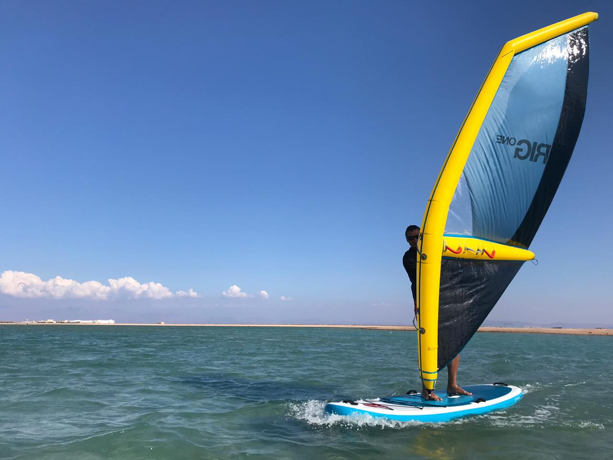

|
Спорт - немов всесвіт. У ньому теж запалюються і загасають зірки | ||
Меню |
ВіндсерфінгВіндсерфінг поєднує в собі елементи серфінгу і майстерність парусного спорту. Обладнання, яке використовується тут являє собою дошку для серфінгу з вітрилом, закріпленим на рухомий щоглі. Віндсерфінг – ефективне тренування всього тіла. Цей вид спорту задіює передпліччя, корпус, а також верхню і нижню частину спини. Спортивний снаряд, що використовується у віндсерфінгу, називається «вітрильною дошкою» або «віндсерфом», і складається з легкої дошки обтічної форми довжиною 2-4,7 м, виконаної з плавучого матеріалу, і закріпленого на ній в гнучкому з'єднанні вітрила. Вітрильна дошка являє собою спрощену модель вітрильного судна, позбавленого стерна. Управління здійснюється шляхом нахилу щогли з вітрилом, а при русі в режимі глісування, також за допомогою нахилу самої дошки з борту на борт. Швидкість і напрямок руху залежать від положення вітрила відносно вітру. Положення вітрила контролюється спортсменом («віндсерфером»), який утримує його руками за поперечину — гік-«вішбон». Рух на парусній дошці можливий при будь-якій силі вітру. Досвідчені спортсмени володіють технікою руху на хвилях, а також виконують стрибки різного ступеня складності. У даний час віндсерфінг є не тільки видовищним видом спорту, але і популярною водною розвагою для широкого кола людей, які обирають активний відпочинок. |
Рух на вітрильній дошці може здійснюватися двома основними способами
|
|
|

|
|||
|
Обирайте найкраще для себе! | ||